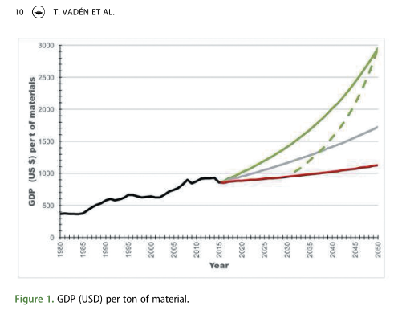

Created Tuesday 30 June 2020
@2020 @article
Vadén, T., Lähde, V., Majava, A., Järvensivu, P., Toivanen, T., Eronen, J. T. (2020). Raising the bar: on the type, size and timeline of a ‘successful’ decoupling. Environmental Politics. https://doi.org/10.1080/09644016.2020.1783951
4
Magee and Devezas (2017) go through 57 cases of key materials or technological artifacts on a global level and show that, because of rebound, consistent dematerialization has not taken place despite high levels of technological progress in some fields (e.g., hard disk drives). However, ‘[a]n optimistic possibility yet remains: drastic substitution (on a functional and system basis) of more benign technologies where such technologies result from continuing technological change’ (Magee & Devezas 2017). This means that functions such as travel or housing would be realized in radically different ways by changing the technological pathway – making rebound also an issue of policy (see also O’Neill et al. 2018). Also, measures addressing consumption, such as taxation (Freire- González and Puig-Ventosa 2015), can counteract the tendency to rebound
5
As one possible solution, Krausmann et al. (2017) and Krausmann et al.
(2020) suggest that by 2050 the per capita stock level in industrial countries would be returned to what it was in around 1970, for example, through diminishing the amount of infrastructure and buildings in need of upkeep and making the remaining stock much more efficient, while allowing the developing countries to enlarge their stocks to a moderate level (that would need to be extremely efficient, too).
6
The Evidence
There is evidence for both relative impact decoupling and relative resource
decoupling (e.g., Krausmann et al. 2009, UNEP 2011a, 2014, Kovacic et al. 2017). In general, relative decoupling of energy and material use and CO2 emissions from GDP has been observed as a trend for decades, due to improved efficiency. However, periods of absolute decoupling have been short and geographically and/or sectorally limited. Absolute decoupling has been observed only in some industrialized countries, such as the UK, Germany, Japan (see Steinberger et al. 2010, Giljum et al. 2014, Hickel and Kallis 2019), especially connected to periods of recession or low growth (Shao et al. 2017).
In the following, we present results from a bibliometric review and more
general observations on the empirical evidence. A bibliometric survey of the terms ‘decoupling’, ‘economic’ and ‘environment’ using Thomson Reuters’ Web of Science database was conducted (4 October 2018) for years 1990–2018. The survey returned 178 articles, where all of these terms appear in the title, abstract or keywords. Using search words ‘decoupling’ and ‘economic’ returned 1244 articles, and using words ‘decoupling’ and ‘envir- onment’ returned 1731 articles. This suggests that although decoupling as a term has been fairly thoroughly investigated, most of the research during the last 30 years has concentrated on a single subject field, from an environ- mental or an economic perspective.
In the set of 178 articles, 124 discuss the phenomenon of decoupling, but do not present new empirical data, and are therefore left out of the analysis. Out of the 54 papers with empirical data, 10 studies present evidence of absolute decoupling. All but one of those 10 studies present results on a limited geographical area, and none of those 9 regionally limited studies takes into account the role of outsourcing and trade.
7
The only exception is Wood et al. (2018), ( 2018:WoodTradeFootprint ) who use EXIOBASE3, a global multiregional input-output (MRIO) model compiled explicitly to investigate the role of international trade in relation to resource efficiency. They calcu- late both production- and consumption-based indices for greenhouse gas (GHG) emissions, energy use, material use, water consumption, and land use for the period of 1995–2011, concluding that:
On a global scale, achievements in resource efficiency, which are characterized by either absolute or strong relative decoupling from GDP, have been limited. [. . .] Material use has shown the strongest increase, from 8.3 to 11.3 tonnes/ capita (+36%), outstripping growth in GDP. We also see an equal growth of GHG emissions to emissions-relevant energy use, [. . .]. Land and water re- sources, which are more directly subject to natural constraints, have increased the least, with blue water consumption rising from 190 to 200 cubic meters/ capita, and the total surface area of land used for productive purposes showing a reduction of 0.3 hectares/capita [. . .] It is the only indicator that presented (small) absolute decoupling from GDP.
Cases where resource use diminishes while GDP grows can be found in specific economic sectors (such as agriculture) and bounded geographical areas. The review is supported by studies that explore the potential of aggressive policy measures and gains in technological efficiency and find no evidence that absolute decoupling will result in the decades up to 2050 (Dittrich et al. 2012, Schandl et al. 2016).
The discrepancy between the optimism created by observations of relative decoupling and the lack of evidence of absolute decoupling is largely explained by the role of trade and outsourcing in the global economy.
Financialisation can indirectly lead to increased GDP, and consequently to relative decoupling. In this kind of ‘financialised decoupling,’ the material footprint stays the same (or grows), but carries ‘on top’ an (even faster growing) enlarged financial sector (Fletcher and Rammelt 2016, Kovacic et al. 2017).
8
In a recent study, Kovacic et al. (2017) look at EU14 countries between 1995 and 2013. During that time, the energy intensity of the economies fell ca. 20%, thus clearly indicating decoupling. However, at the same time, the financial intensity (defined as the sum of financial assets divided by GDP) grew even faster, ca. 60%. The authors further analytically divide the econ- omy into three parts, FINance, GOVernment and DE* (DE* including all the rest: agriculture, manufacturing, transport, building and so on, i.e., the majority of all physical activity of moving and transforming materials). During the period analysed, the energy intensity of DE* (defined as energy used divided by worked hours) has remained constant; because the energy use of FIN and GOV is in any case relatively small (compared to DE*), the observed decrease of energy intensity is due to the growth of financial assets which has ballooned the GDP. As the energy intensity of DE* has not declined, Kovacic et al. (2017) deduce that ‘the decoupling between energy throughput and economic growth in the EU14 reflects a process of financia- lization, rather than a change in metabolic patterns or production processes.
9
For the sake of the argument, we define ‘successful decoupling’ conserva-
tively as one that could be sustainable in material terms and could be compatible with stopping temperature rise to 2°C. We will take the data of IPR (2017) as a starting point for global resource use and use 9.7 billion as the global population by 2050 (in the median range of UN World Population Prospects 2017, https://esa.un.org/unpd/wpp/). A level of sustainable use conceivably compatible (Krausmann et al. 2017) with Paris Agreement goals would be around 68 billion tonnes (roughly the level of resource use in year 2000), entailing a per capita use of ca. 7 tonnes in 2050 (compare Bringezu 2015, Tukker et al. 2016). Correspondingly, taking a modest yearly growth rate of 2%, the size of the economy in 2050 would be ca. 150,000 billion USD (starting from the global GDP of 80,000 billion in 2017 reported by the IMF, http://www.imf.org/external/pubs/ft/weo/2017/ 02/weodata/index.aspx).
10

In the ‘successful decoupling’ (Figure 1), world total GDP doubles compared to 2017 while global resource use per capita decreases by ca. 42%. More specifically, this means a halving of per capita resource use in Europe and a cut of two-thirds in North America. Globally, the amount of GDP created by every billion tons of resource extraction in 2050 would be ca. 2.4 billion USD compared to ca. 0.9 billion USD in 2017, a formidable task given that half of all resource use goes towards the upkeep of existing stock and that the current trend is a decrease in the GDP productivity of material extraction (IRP 2017) and stock use (Krausmann et al. 2017), resulting in declining current trend is a decrease in the GDP productivity of material extraction (IRP 2017) and stock use (Krausmann et al. 2017), resulting in declining global material efficiency (Schandl et al. 2017). (IRP 2017) and stock use (Krausmann et al. 2017), resulting in declining global material efficiency (Schandl et al. 2017).
{kind=link}